Draws a regression line with perceptually distinct dual-stroke coloring for improved visibility.
geom_lm_dual(
data,
mapping,
method = "lm",
formula = y ~ x,
base_color = "#777777",
contrast = 4.5,
method_contrast = "WCAG",
...,
linewidth = 1,
show.legend = NA
)Arguments
- data
A data frame containing the variables.
- mapping
Aesthetic mapping, must include
xandy.- method
Regression method to use (default is "lm").
- formula
Model formula (default is
y ~ x).- base_color
Base color to derive the dual-tone pair from.
- contrast
Minimum contrast ratio to aim for (default is 4.5).
- method_contrast
Contrast algorithm to use ("WCAG", "APCA", or "auto").
- ...
Additional parameters passed to
geom_segment_dual().- linewidth
Width of the line stroke (top stroke). Bottom stroke is drawn slightly thicker.
- show.legend
Whether to show legend.
Value
A ggplot2 layer containing the dual-stroke regression line.
Examples
library(ggplot2)
# Simple test with linear trend
set.seed(42)
df <- data.frame(x = 1:100, y = 0.5 * (1:100) + rnorm(100))
ggplot(df, aes(x, y)) +
geom_point() +
geom_lm_dual(data = df, mapping = aes(x = x, y = y)) +
theme_minimal()

# Over grayscale tiles
x <- seq(1, 11, length.out = 100)
y <- 0.5 * x + rnorm(100, 0, 0.3)
df1 <- data.frame(x = x, y = y)
tiles <- data.frame(
x = 1:11,
fill = c("#000000", "#1b1b1b", "#444444", "#777777", "#aaaaaa",
"#dddddd", "#D5D5D5", "#E5E5E5", "#F5F5F5", "#FAFAFA", "#FFFFFF")
)
tiles <- tiles |>
expand.grid(y = seq(0, 1, length.out = 100), x = tiles$x) |>
merge(tiles, by = "x")
ggplot() +
geom_tile(data = tiles, aes(x = x, y = y, fill = fill), width = 1, height = 10) +
scale_fill_identity() +
geom_point(data = df1, aes(x = x, y = y), color = "purple", size = 2) +
geom_lm_dual(data = df1, mapping = aes(x = x, y = y)) +
theme_minimal()